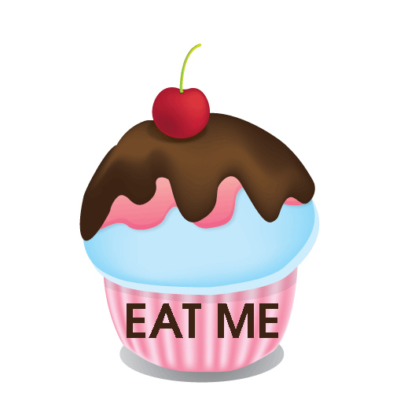

Natuurlijk zijn een goed trainingsschema en het juiste materiaal heel belangrijk. Maar al dit harde werk zal niet beloond worden als u niet oplet met wat u eet. Er zijn heel veel verleidingen als u thuis komt van het trainen. Welke dingen kan u best eten? En welke zeker niet? Hieronder leest u het antwoord op deze vragen.
Eiwitshakes
Wanneer u in een fitness ingeschreven bent, zal u hoogswaarschijnlijk geconfronteerd worden met dit product. Maar wat is dit nu eigenlijk en heeft u het nodig?
Eiwitshakes kan u best in nemen in de ochtend en voor of na de training. De voornaamste taak van eiwitshakes, is het aanvullen van de proteïnes die u niet uit uw dagelijkse voeding kan halen. Belangrijk om te onthouden is dat deze shakes enkel dienen ter aanvulling en niet als dagelijkse basis.
TIP: begin eerst met een voedingsschema op te stellen, en integreer hier al veel eiwitrijke producten in. Voorbeelden van eiwitrijke producten zijn: kip, kalkoen, biefstuk, kwark, vis of tofoe. Zoals u ziet zijn er veel opties, wanneer u ondanks al deze opties niet de aangeraden hoeveelheid proteïnes binnenkrijgt kan u eiwitshakes gebruiken.
Superfruit
Bananen
bananen zijn de ideale sportvoeding, aangezien de aanwezige “snelle” suikers die direct door het lichaam worden opgenomen. Ze zitten ook boordevol met magnesium en kalium en dit is goed voor uw hart- en bloedvaten en bij het voorkomen van een te hoge bloeddruk.
Aardbeien
aardbeien bevatten onder andere veel vitamine C, en dit is een voordeel voor uw immuunsysteem wat je weerbaarder maakt tegen ziekteverwekkers. Ook bevatten te veel antioxidanten en bieden ze bescherming tegen welvaartsziekten zoals overgewicht, diabetes en hart- en vaatziekten.
Blauwe bessen
Blauwe bessen zijn echte vitaminebommetjes, ze bevatten antioxidanten die ervoor zorgen dan het verouderingsproces van uw brein vertraagt wordt. Deze antioxidanten zorgen voor een betere wondgenezing, ze gaan ontstekingen tegen en beschermen tegen verschillende ziektes waaronder kanker.
Supergroenten
Boerenkool
Boerenkool bevat heel veel vitaminen en mineralen, hierdoor zorgt het voor een goede weerstand, veel energie, het voorkomt bloedarmoede in is ook nog eens goed voor sterke botten.
Broccoli
Wanneer men broccoli eet worden er in het lichaam bepaalde enzymen aangemaakt die u beschermen tegen hartproblemen en maagzweren. Het is eveneens goed voor de vertraging van het verouderingsproces.
Wortelen
Een van de bekendste voordelen van wortelen is dat ze goed zijn voor de ogen. Dit komt omdat in wortelen vitamine A zit, en dit komt ten goede van het functioneren van de ogen. Daarnaast zijn ze ook goed voor een mooie huid. In wortelen zitten ook veel vitamine B5, dit is van belang voor de afbraak van vetten, koolhydraten en eiwitten en het speelt een belangrijke rol bij de energievoorziening. Daarbij zorgen ze ook voor een goed functioneren zenuwstelsel en de aanmaak van een aantal hormonen.
Spinazie
Spinazie bevat nitraten, deze nitraten voorzien je cellen van extra energie, hetgeen onder andere je sportprestaties weer ten goede komt.
Spruitjes
Spruitjes hebben een reinigende werking op het lichaam en bevatten veel vezels (dit komt uw stoelgang ten goede). Ook beschermen ze uw lichaam tegen ziektes en veroudering.
Zondigen

Iedereen durft zich wel eens te laten verleiden tot iets ongezond, maar achteraf zou u soms willen dat u dat niet gedaan had. Daarom zetten we hier eerst enkele cijfers op een rij over vaak voorkomende tussendoortjes of zoete "zondes". En we geven u enkele gezonde alternatieven.
De top tien
Zoals voor vele dingen, bestaat er ook voor ongezonde snacks een top 10. Hieronder gaan we het lijstje even af
10. Taart, cake of ander gebak
Veel mensen eten wel eens graag een stuk taart of cake, maar gezond is het niet. Maar bij een stukje van deze lekkernij krijg je toch makkelijk tussen de 100 en 300 calorieën, 12 gram vet, 22 gram koolhydraten en 2 gram proteïnes binnen.
9. Nachos met kaasdip
Iedereen kent ze wel, en vele eten het wel in de bioscoop. Maar met 100 gram van deze snack krijgt u al 306 calorieën, 16 gram vet, 32 gram koolhydraten en 8 gram proteïnes binnen.
8. Een frappuccino mét slagroom van Starbucks
Een vaak voorkomende zoete "zonde" van jongeren is dit drankje. Met een medium beker van dit drankje krijgt u 610 calorieën, 22 gram vet, 90 gram koolhydraten en 15 gram proteïnes binnen.
TIP: een gewone koffie met melk is veel beter voor de gezondheid.
7. Één kippenbilletje van bij KFC
Het is misschien even schrikken maar met slechts 1 kippenbilletje, krijg je toch minstens 360 calorieën, 25 gram vet, 12 gram koolhydraten en 22 gram proteïnes binnen.
TIP: een stukje gegrilde kip is een veel beter alternatief.
6. Frietjes
Iedereen heeft deze zonde al gehad, de typische belgische frietjes. En meestal eten we deze niet alleen, vaak is het nog met saus en een stukje vlees. En met deze typische belgische snack krijgen we 342 calorieën, 18 gram vet, 40 gram koolhydraten en 4 gram proteïnes binnen.
TIP: als je frietjes wil eten, dan snij je ze volgende keer beter een paar aardappels in dikke schijven, met schil, besprenkel ze met olijfolie en zeezout. En daarna bak je ze in de oven.
5. Curryworst
Dit tussendoortje komt ook vaak samen met nummer 6. Deze snack bevat 200 calorieën, 32 gram vet, 2 gram koolhydraten en 58 gram proteïnes.
4. Big Mac
Nog zo'n snack die iedereen kent, deze snack bevat 600 calorieën, 33 gram vet, 50 gram koolhydraten en 25 gram proteïnes.
TIP: kies liever een kleinere hamburger zonder saus, of nog beter een stukje gegrilde kip zonder saus.
3. Een potje Ben & Jerry's ijs
Het internationaal bekende merk bevat voor een normaal potje 380 calorieën, 26 gram vet, 29 gram koolhydraten en 6 gram proteïnes.
2. Chips
Ook een welbekende snack in de bioscoop, en toch krijgen we op 100 gram chips 536 calorieën, 35 gram vet, 53 gram koolhydraten en 7 gram proteïnes binnen.
TIP: kies volgende keer in de supermarkt misschien beter voor een zak kroepoek.
1. Mars, Snickers en andere
Een snel tussendoortje in een pauze is een snoepreep of een koekje. Maar op 1 reep Mars of Snickers krijgen we toch 200 calorieën, 8 gram vet, 35 gram koolhydraten en 7 gram proteïnes binnen.
TIP: tijdens de pauze kan u beter een stuk fruit, slaatje of volkoren-broodje eten.